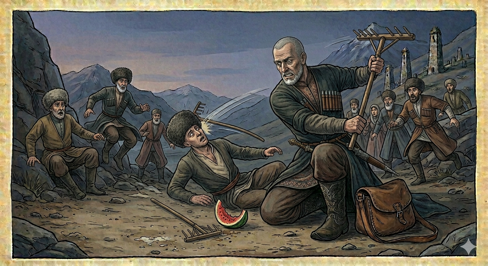

И.А. Дахкильгов. Хьехаме дувцарш - поучительные рассказы-притчи.
И.А. Дахкильгов. Хьехаме дувцарш - поучительные рассказы-притчи. Из ингушского фольклора.

Юхабаь бегаш
КӀи-марса хана цхьан саго белхий баьб. Делкъийна салаӀа болхлой Ӏохайшача, царна юкъе хиннача кертах чагаргаш яьнна волчоа, бегашта аьнна, кертах харбаза чӀӀорг техай цхьанне. Чагаргаш яьнначо хьаюхалостадаь йолхьанг техад. Харбаза чӀӀоргаш кхийсар кулла мо дӀавахав, кхетама чура ваьннав. - Ай, хӀанз фу дир Ӏа? Ер лай, фу аргда Ӏа? - берригаш а хетта болабеннаб. - Цо хьоца баьраш-м бегаш ма барий, - аьннад. - Аз юхабаьраш а ба бегаш, бегашта вийнав, даьра аргда, - жоп деннад чагаргаш яьнначо. - Бегаш юхабича, ше лергволаш хилча, во, даьсара, баьб цо уж бегаш.
РУССКИЙ
Ответная шутка
Пришло время жатвы, и некий мужчина позвал к себе на помощь многих сельчан. Подошло время обеда. Когда все расселись, один из них решил подшутить над одним плешивцем. Шутник запустил в его плешивую голову арбузную корку. Плешивец же, недолго думая, заехал шутнику граблями по голове. Шутник потерял сознание и распластался на земле. - Что ты наделал? - накинулись люди на плешивца. - А если он помрет, что ты скажешь? Ведь он с тобою просто пошутил. - А я тоже пошутил в ответ, скажу, что убил шутя, - ответил плешивец. - Пусть не берется шутить, если он не понимает ответных шуток.
ENGLISH
A joke in return
It was harvest time, and a certain man called on many villagers to help him. It was time for lunch. When everyone had sat down, one of them decided to play a prank on a bald man. The prankster hurled a watermelon rind at the bald man's head. Without a moment's hesitation, the bald man struck the prankster on the head with a rake. The prankster lost consciousness and collapsed on the ground. 'What have you done?' the villagers pounced on the bald man. 'What will you say if he dies? After all, he was just joking with you.' 'I was just joking back too,' replied the bald man. 'I'll say I killed him in jest. Let him not go joking if he doesn't understand a joke in return.'
НОХЧИЙН
ПОГОВОРКИ
Бегаш – къовсама юхьигаш. - Шуточки – начало ссоры.Бегаши цӀимхаши цхьана тац. - Не уживчивы между собою шутки и разговор всерьез.Бегех дикадар даьннадац. - Шутки до добра не доводят.Биткъачара мара муш хаьдабац. - Веревка рвется там, где тонко.Воаллашехьа а валац когабухьара. - Танец не начинают с бурного перепляса.“Дунен чу вахаш, ер корта чагарга хилча, венначул тӀехьагӀа ер дошо а хилча, адамийчоа тара маца хургба ер?”, - яьхад чагарта корта болчо. - Плешивого утешали, а он отвечал: “Если при жизни голова плешивая, по смерти (в раю) – она золотая, то когда же она станет похожей на человеческую?”ДӀатохалехьа ха деза юхатохоргйолга. - Прежде чем ударить, вспомни, что можешь получить сдачи.Ловзарах беркат даьннадац. - Шуточки до добра не доводят.Мухаш ухаш волча сагаца бегаш ма бе. - Не шути с обидчивым человеком.Топ-тапчо бегаш бац. - Ружье, пистолет (огнестрельное оружие) шуток не знают.ЭгӀазваха эзди саг воасталургва, лай саг киса бий а баь, леларгва. - Благородный, если он и рассердится, отходчив; неблагородный же постоянно держит в кармане сжатый кулак.Ӏайха ловргдоацар нахага ма ала. - Не говори другим того, что тебе самому не понравится.